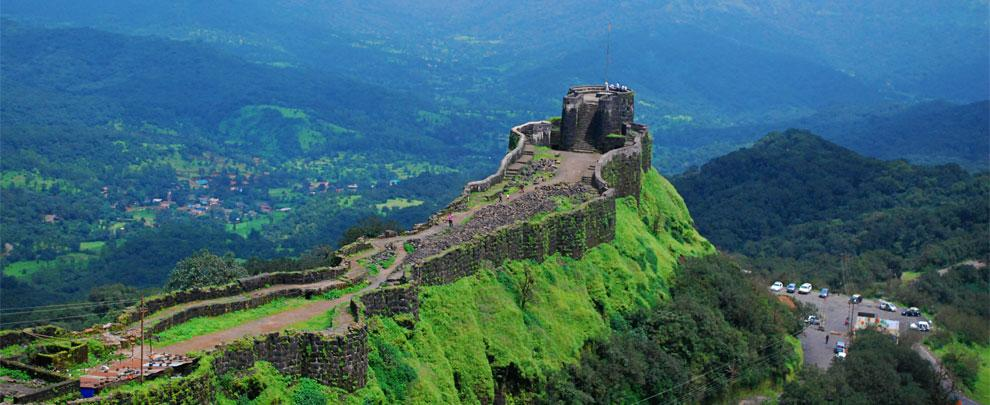
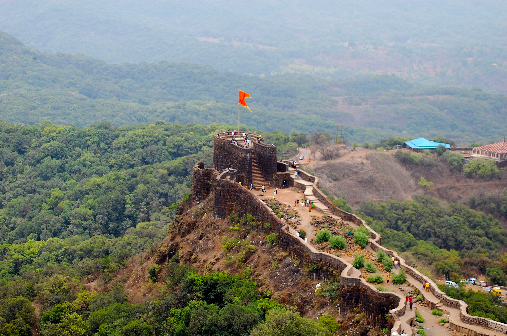
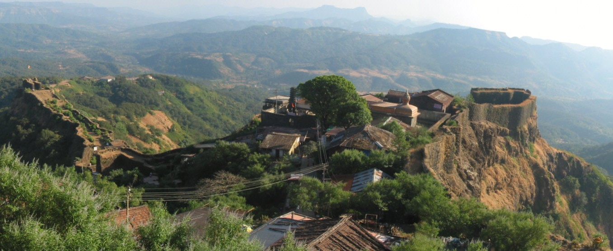

Pratapgad is a large, mountain fort located in Satara district, in the Western Indian state of Maharashtra. The fort's historical significance is due to the battle, which took place here on 10 November 1659, between Chatrapati Shivaji Maharaj and Bijapur sultanate's general Afzal Khan. Shivaji Maharaj killing of Afzal Khan at that time was followed by decisive Maratha victory over the Bijapur army.This fort is situated on a mountain 24 kilometres from from the Mahabaleshwar hill station.[5] The fort is now a popular tourist destination. It has a large statue of Chatrapati Shivaji Maharaj riding a horse. Pratapgad is a large, mountain fort located in Satara district, in the Western Indian state of Maharashtra. The fort's historical significance is due to the battle, which took place here on 10 November 1659, between Chatrapati Shivaji Maharaj and Bijapur sultanate's general Afzal Khan. Shivaji Maharaj killing of Afzal Khan at that time was followed by decisive Maratha victory over the Bijapur army.This fort is situated on a mountain 24 kilometres from from the Mahabaleshwar hill station.[5] The fort is now a popular tourist destination. It has a large statue of Chatrapati Shivaji Maharaj riding a horse.


